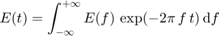
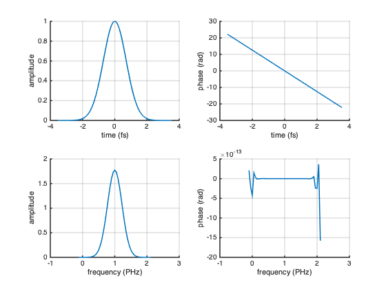
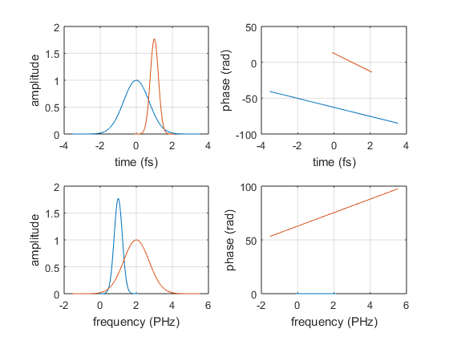
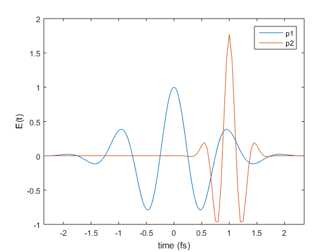

LaserPulse
The LaserPulse class allows to store pulses in a convenient way, analyze them and perform simple mathematical operations.
Contents
Initialization
A LaserPulse object can be initialized in either time of frequency domain:
% time domain pulse: t = -10 : 0.01 : 9.99; p1 = LaserPulse(t, 'fs', exp(-t.^2 - 2i*pi*t)); % frequency domain pulse: f = -10 : 0.01 : 9.99; p2 = LaserPulse(f, 'PHz', exp(-(f-2).^2 + 2i*pi*f));
In either case both time and frequency domains are computed and kept automatically synchronized.
Physical Properties
Several properties are automatically calculated and can be accessed using the dot notation. For instance, using the following commands, we can display pulse duration, bandwidth and central frequency:
% display pulse duration for p1 and p2 fprintf('pulse durations are %.2f %s and %.2f %s\n', ... p1.duration, p1.timeUnits, p2.duration, p2.timeUnits); % display pulse bandwidth for p1 and p2 fprintf('pulse bandwidths are %.2f %s and %.2f %s\n', ... p1.bandwidth, p1.frequencyUnits, p2.bandwidth, p2.frequencyUnits); % display central frequency for p1 and p2 fprintf('central frequencies are %.2f %s and %.2f %s\n', ... p1.centralFrequency, p1.frequencyUnits, ... p2.centralFrequency, p2.frequencyUnits);
pulse durations are 1.18 fs and 0.38 fs pulse bandwidths are 0.38 PHz and 1.18 PHz central frequencies are 1.00 PHz and 2.00 PHz
Names and Definitions
The LaserPulse class uses relatively long names in order to distinguish between fields in time and frequency domain. The fields are defined as follows:
time domain fields:
p.temporalField == p.temporalAmplitude * exp(1i * p.temporalPhase)
frequency domain fields:
p.spectralField == p.spectralAmplitude * exp(1i * p.spectralPhase)
Internally the fields are synchronized using a fft routine. The sign convention for the fft is:


Plotting Fields
In the LaserPulse class the plot() method is overloaded to provide a quick way to visualize fields in time and frequency domain:
h = p1.plot();
Two pulses can be displayed on the same axes, by calling plot() with a second argument
p2.plot(h);
More plot types can be obtained using the standard matlab commands. For instance, the next figure shows how to display the real part of the electric field in time domain:
figure() plot(p1.timeArray, real(p1.temporalField), ... p2.timeArray, real(p2.temporalField)); xlim([-2, 2]*p1.duration) xlabel(sprintf('time (%s)', p1.timeUnits)); ylabel('E(t)'); legend('p1', 'p2')
Examples
- pulse_autocorrelation.m (source) example of interferometric autocorrelation
- pulse_create_new.m (source) examples of how to set-up a LaserPulse object
- pulse_display_properties.m (source) example of how to obtain LaserPulse properties
- pulse_four_wave_mixing.m (source) example of nonlinear process with LaserPulse class
- pulse_harmonics.m (source) examples of higher harmonics
- pulse_linear_mixing.m (source) examples of linear superposition of LaserPulse objects
- pulse_nonlinear_mixing.m (source) example of nonlinear mixing of LaserPulse objects
- pulse_replicas.m (source) example of how to create time-shifted replicas and pulse trains
- pulse_gaussian_sech_lorentzian.m (source) example of Gaussian, Lorentian and hyperbolic secant pulse shapes
- pulse_self_phase_modulation.m (source) example simulation of self-phase modulation using LaserPulse class
- pulse_interferometric_FROG.m (source) example of interometric frequency resolved autocorrelation